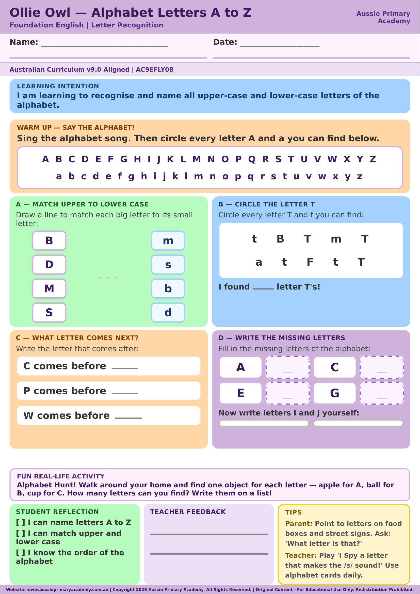

Foundation · English · Alphabet · Free Printable
Alphabet: Letter A to Z Worksheet
Help Foundation students recognise, trace and practise every letter from A to Z with this clear, print-and-go alphabet worksheet.
Worksheet Preview

Preview of the worksheet · Download the full printable PDF below
Quick Facts
- Year level: Foundation
- Learning area: English
- Focus: Recognising, tracing and forming letters A to Z
- Includes: Alphabet practice + answer support
- Format: Colour PDF · Printable A4
- Best for: Classroom, homework, tutoring and homeschool
About this worksheet
This Foundation English worksheet gives early learners structured practice with the letters of the alphabet from A to Z. Students recognise each letter and practise its formation in a simple, age-appropriate layout.
Use it for an alphabet review, literacy rotations, handwriting practice, tutoring or learning at home.
Learning Intention
Students will recognise and form uppercase and lowercase letters from A to Z.
Curriculum Alignment
Supports Foundation English learning about alphabet knowledge, letter recognition and letter formation in the Australian Curriculum V9.0.
Aussie Primary Academy is an independent publisher and is not endorsed by ACARA.
Skills Practised
- Recognising letters A to Z
- Matching uppercase and lowercase letters
- Tracing and forming letters
- Building alphabet order knowledge
- Developing pencil control
Teacher / Parent Notes
Model the letter name and formation first. Encourage the child to say the letter aloud while tracing, then try writing it independently.
How to use this worksheet
- Whole class: Model letter formation before students begin
- Literacy rotations: Use as an independent alphabet station
- At home: Practise a few letters at a time rather than completing everything at once
- Next step: Move from letter recognition to matching letters with their most common sounds
Differentiation
Support: Complete three to five letters at a time and use verbal prompts or a model alphabet.
Core: Recognise, trace and practise all letters independently.
Extend: Say a word that begins with each letter or write a matching word beside selected letters.
Frequently Asked Questions
Is this worksheet suitable for Foundation students?
Yes. It is designed as early alphabet recognition and letter-formation practice for Foundation learners.
Should my child complete every letter in one session?
Not necessarily. Younger learners may benefit from practising a small group of letters at a time and returning to the worksheet later.
What should students practise next?
After recognising and forming letters, practise common letter sounds, beginning sounds and simple CVC words.